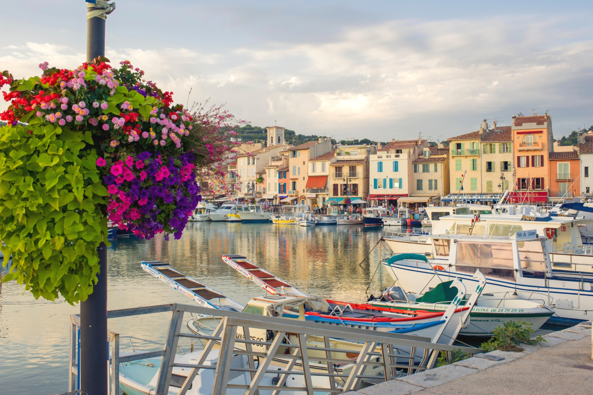
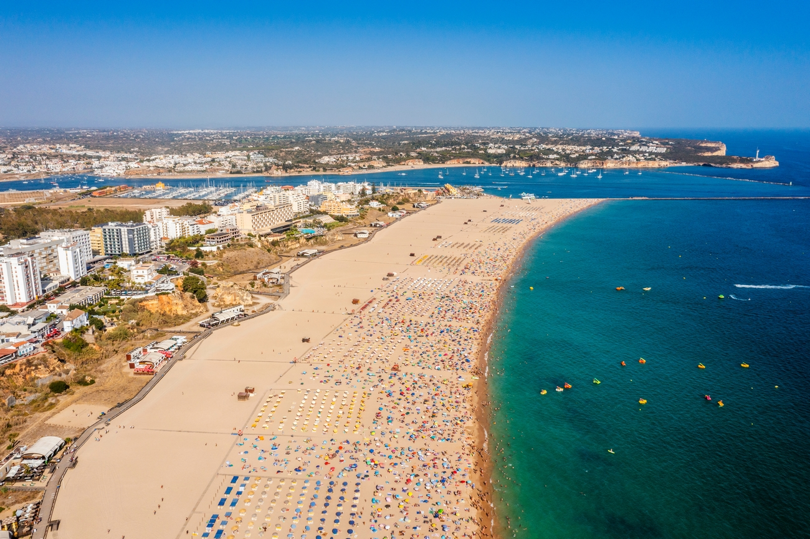
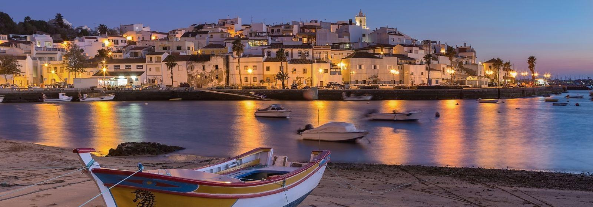

1. Fiskardo, Greece 
Here are some pretty images:


- Population: 322
- Latitude: 38.4
- Longitude: 20.5
This town is located in Greece; it has a small fishing fleet and a small population.
2. Vernazza, Italy 
Here are some pictures of this pretty Italian town:


- Population: 1,001
- Latitude: 44.1
- Longitude: 9.6
This small town is located in Italy, with some colorful houses and boats. It looks like the town from the movie "Luca".
3. Cassis, France 
Let's see some pretty pictures from Cassis:

- Population: 6,720
- Latitude: 43.1
- Longitude: 5.32
This pretty fishing town is located in France.
4. Vigan City, Philippines
Let's see this town that sounds like "Vegan":


- Population: 47,000
- Latitude: 17.34
- Longitude: 120.23
This town is located in the Philippines and surprisingly participated in WW2.
5. Portimão, Portugal 
Let's take a look at this Portuguese town:


- Population: 60,849
- Latitude: 37.8
- Longitude: 8.32
This not-so-small town is in Portugal.